77
張專輯
30
獎項紀錄
600
頂帽子收藏
77
張專輯
30
獎項紀錄
600
頂帽子收藏
海山唱片
發行時間
1972年3月
祝你幸福
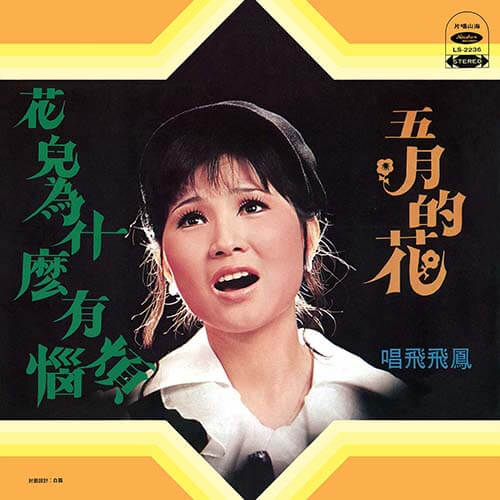
發行時間
1972年6月
五月的花
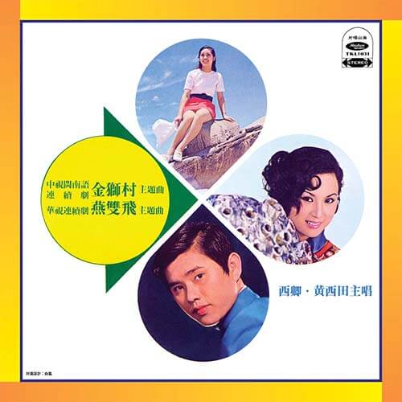
發行時間
1971年11月
金獅村、雙燕飛
發行時間
1972年7月
恩情滴滴淚
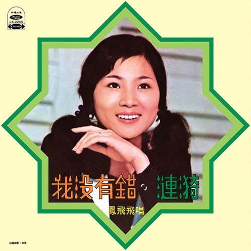
發行時間
1972年9月
我沒有錯
發行時間
1972年9月
東南西北風
發行時間
1973年3月
串串風鈴響
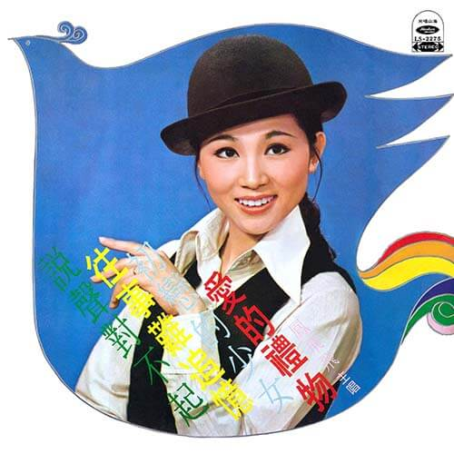
發行時間
1973年6月
愛的禮物
發行時間
1973年9月
你是否忘記了
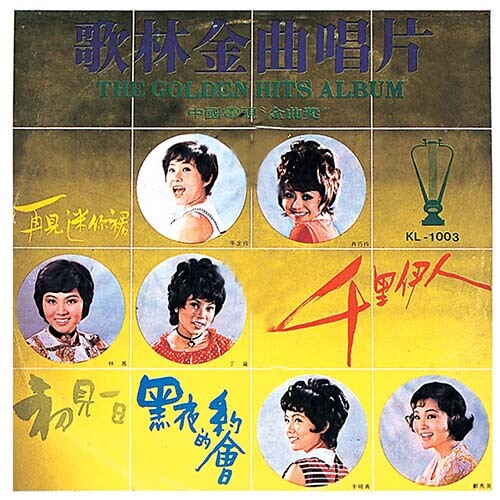
發行時間
1971年9月
歌林金曲唱片
發行時間
1973年12月
雷風雨

發行時間
1974年3月
我不能沒有信心 愛之歌
發行時間
1974年4月
早晨再見
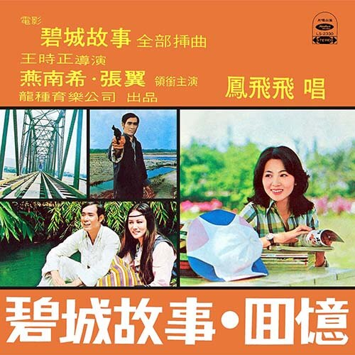
發行時間
1974年6月
愛的奇蹟
發行時間
1974年9月
半山飄雨半山晴
發行時間
1974年10月
雪花片片
發行時間
1974年11月
有真情有活力
發行時間
1974年11月
銀浪
發行時間
1974年12月
雲飛何處
發行時間
1975年3月
情場就是戰場
發行時間
1975年5月
金鑲玉、三百磅
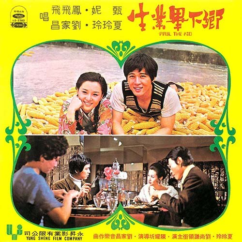
發行時間
1975年7月
鄉下畢業生
發行時間
1975年8月
近水樓台
發行時間
1975年8月
當我認識你
發行時間
1975年9月
秋纏
發行時間
1975年12月
呼喚、流雲
發行時間
1976年1月
意難忘
發行時間
1976年3月
不一樣的愛
發行時間
1976年3月
楓葉情
發行時間
1976年6月
溫暖在秋天
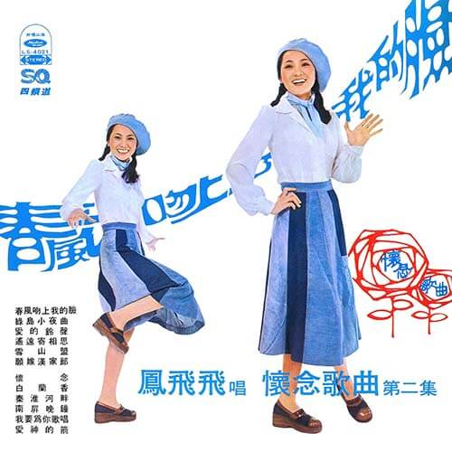
發行時間
1976年6月
春風吻上我的臉
發行時間
1976年9月
山鷹
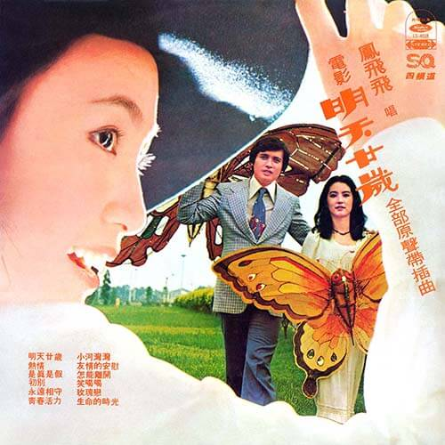
發行時間
1976年9月
明天廿歲
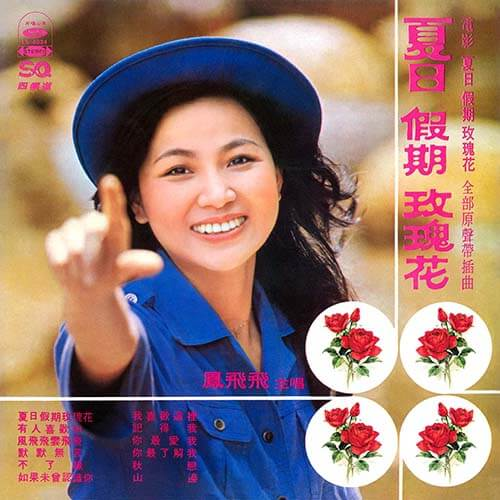
發行時間
1976年10月
夏日假期玫瑰花
發行時間
1976年10月
祝您幸福
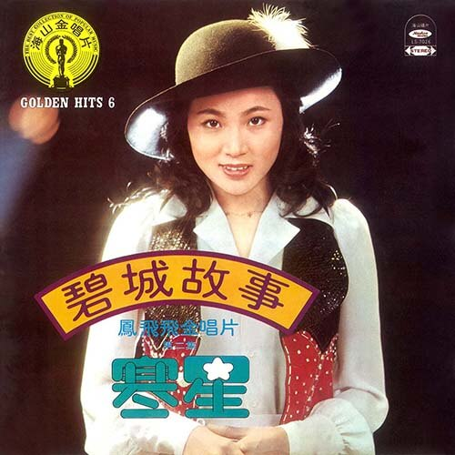
發行時間
1976年10月
碧城故事
發行時間
1976年10月
巧合
發行時間
1976年10月
又是秋天
發行時間
1976年10月
楓葉情
發行時間
1976年10月
落葉飄飄
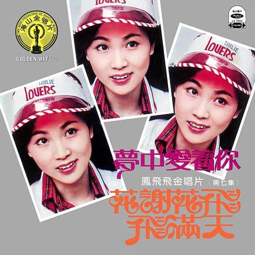
發行時間
1976年10月
花謝花飛飛滿天
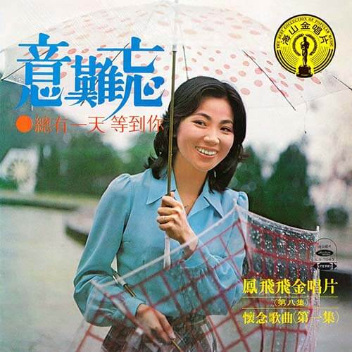
發行時間
1976年10月
意難忘
發行時間
1976年10月
春風吻上我的臉
發行時間
1976年10月
落葉飄飄
發行時間
1977年1月
台北66
歌林唱片
發行時間
1979年6月
一片深情
發行時間
1978年11月
一顆紅豆
發行時間
1979年10月
又見秋蓮
發行時間
1983年12月
不知怨
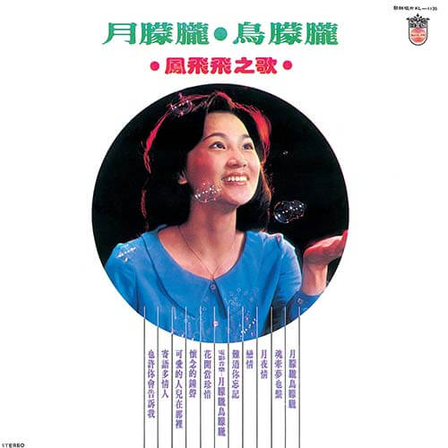
發行時間
1978年1月
月朦朧鳥朦朧
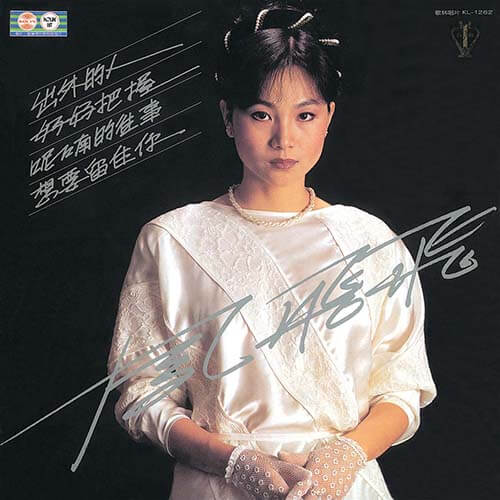
發行時間
1983年4月
出外的人
發行時間
1977年3月
台灣民謠專集
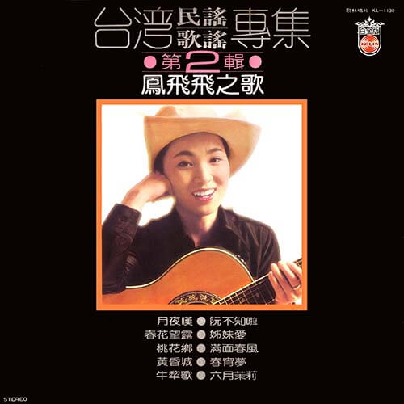
發行時間
1977年12月
台灣民謠歌謠專集 第2輯
發行時間
1979年12月
台灣民謠歌謠專集 第三集
發行時間
1982年8月
鳳飛飛台灣民謠歌謠專輯
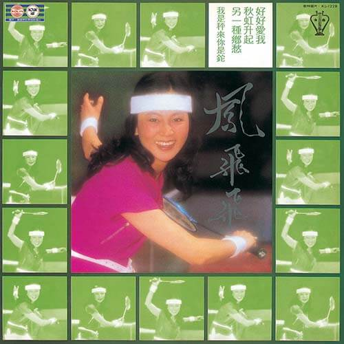
發行時間
1981年10月
好好愛我
發行時間
1985年12月
自我挑戰
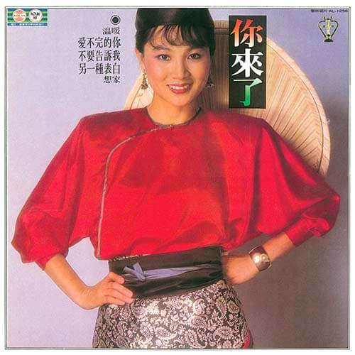
發行時間
1982年12月
你來了
發行時間
1977年1月
我是一片雲
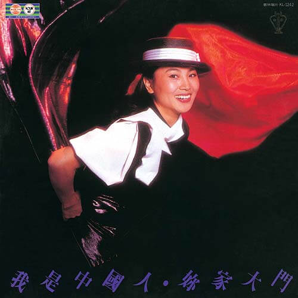
發行時間
1982年7月
我是中國人
發行時間
1971年9月
歌林金曲唱片
發行時間
1977年6月
奔向彩虹
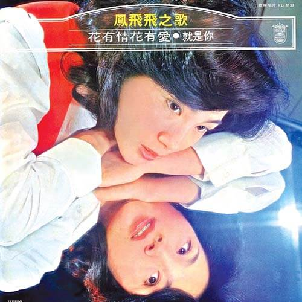
發行時間
1978年4月
花有情花有愛
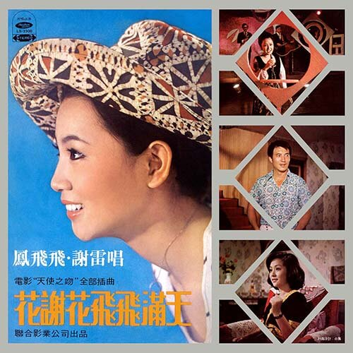
發行時間
1973年9月
花謝花飛飛滿天
發行時間
1980年3月
金盞花
發行時間
1976年10月
星語
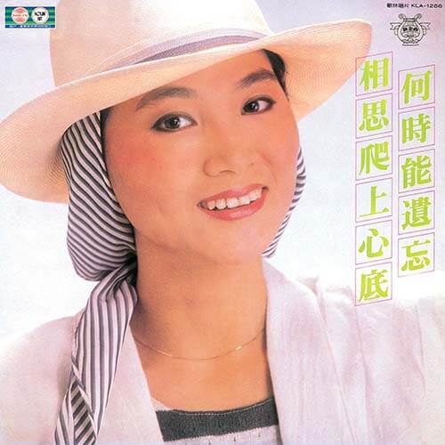
發行時間
1983年8月
相思爬上心底
發行時間
1978年8月
晨霧
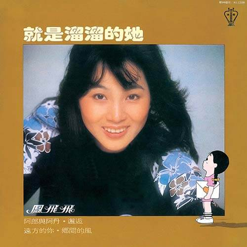
發行時間
1980年11月
就是溜溜的她
發行時間
1986年9月
掌聲響起
發行時間
1979年2月
雁兒在林梢
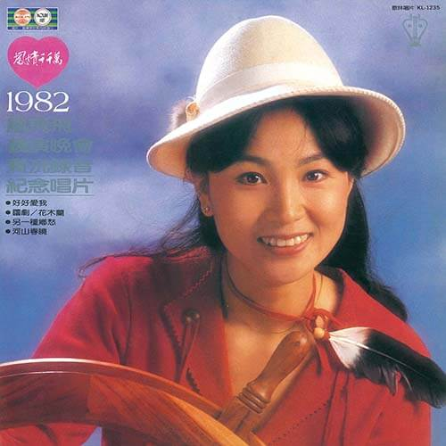
發行時間
1982年1月
鳳情千千萬
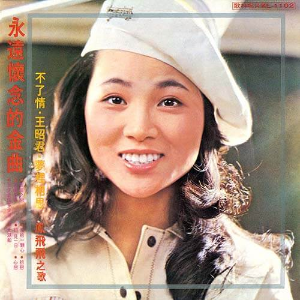
發行時間
1976年11月
永遠懷念的金曲
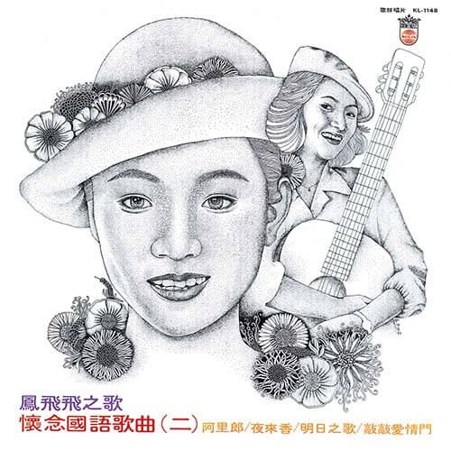
發行時間
1978年9月
懷念國語歌曲 二
東尼唱片
發行時間
1978年12月
夜來香
發行時間
1978年12月
玫瑰玫瑰我愛你
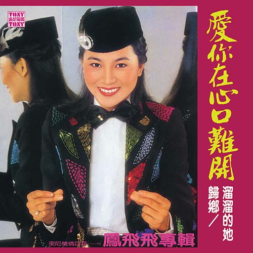
發行時間
1981年2月
愛你在心口難開
發行時間
1976年9月
綠島小夜曲
發行時間
1981年5月
鳳飛飛精粹
發行時間
1978年12月
蘋果花
北聯唱片
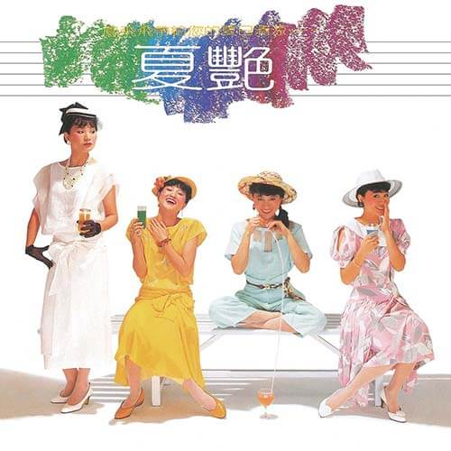
發行時間
1984年7月
仲夏
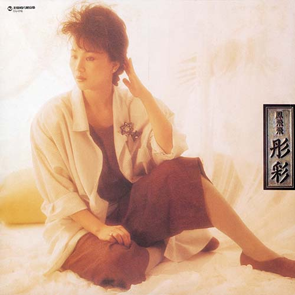
發行時間
1985年4月
彤彩
藍與白唱片
發行時間
1987年6月
什麼樣的你
發行時間
1988年2月
鳳飛飛1968~1988珍藏版
發行時間
1988年2月
鳳飛飛1968~1988珍藏版
真善美唱片
發行時間
1991年2月
浮世情懷
發行時間
1991年11月
今天的女人和那昨天的女孩
EMI唱片
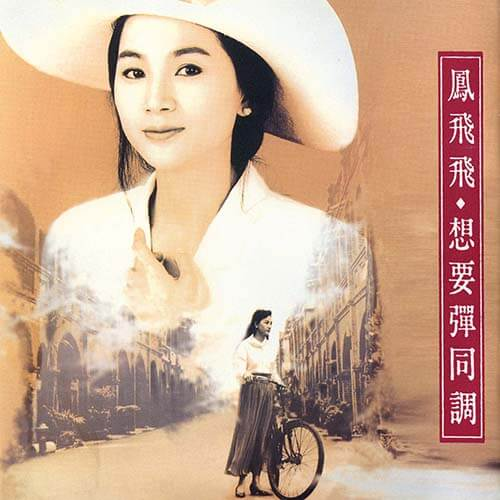
發行時間
1992年8月
想要彈同調
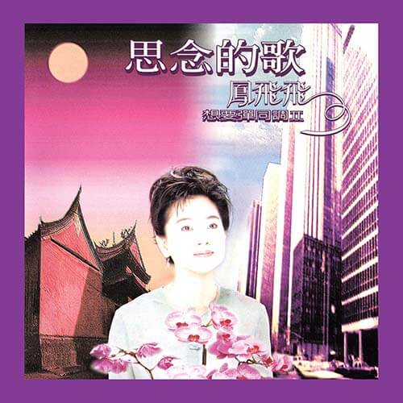
發行時間
1992年8月
想要彈同調-思念的歌
發行時間
1997年6月
想要彈同調-精選輯
發行時間
1994年8月
陪傷心人說往事
環球唱片
發行時間
2004年1月
鳳飛飛35週年演唱會
發行時間
2009年12月
《想要跟你飛》
發行時間
{{ item.date }}